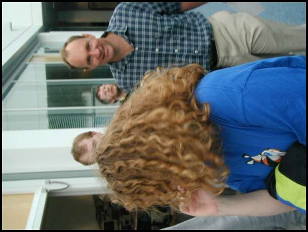

Overview
This document is intended to provide an illustrated walkthrough of the RDFWeb distributed photo-metadata experiment. Right now it is pretty bare, but hopefully will give you an idea of what we're attempting.
Nearby: co-depiction online demo
Introducing RDFWeb with photo metadata
RDFWeb is intended to be both fun and technically challenging. We hope that at least some of the writing here will be accessible for a general audience, although much of it will be for the rather small community familiar with the subtleties of various Semantic Web technologies. We're trying to build a linked information system, RDFWeb, as a way of connecting these two goals. In particular, we want RDF to present practical and interesting applications for the Semantic Web, and explore ways of making them real. One of our favourite examples is photo metadata. This document tries to explain why...
The Semantic Web
The (soon to be "Semantic") Web, if it is to reach its full potential, needs to become a lot more automatic. We hope that it will be able to do things (offer us services) based on combining data and services scattered around the Web. It might, for example, be able to find the phone numbers or AOL screen names of all your friends and professional collaborators. Or show you the photos, names and recent publications and shared bookmarks for everyone attending the next meeting in your calendar.
There are so many things the Web might usefully do in the future, that it is sometimes hard to see how we can get there from here. W3C's RDF has been around since 1997, yet while it has been adopted in a number of applications (for example by Mozilla, Open Directory, Adobe, RSS 1.0), people often ask why there is as yet no killer app for RDF. While we're not sure that 'killer app' is the right way to think about the problem, it is true that there is relatively little RDF data 'out there in the public Web', in the way that HTML is 'out there'.
The original idea behind RDFWeb was to experiment with
making some cheap, simple RDF-based document formats that
were designed for deployment in the public Web. We began by
asking 'What would it be like if machines could read my
homepage?', and by prototyping a simple vocabulary called
FOAF ('Friend of a
Friend'). The FOAF vocabulary provided a way for RDF
documents to talk about people and their characteristics.
FOAF documents also make use of hypertext,
providing 'seeAlso' links to other FOAF
documents elsewhere in the Web. This simple convention
makes it possible for RDF indexing tools to explore an
(RDF)Web of linked documents (hence the name of
the project).
From foaf:knows to foaf:depiction
Shortly after prototyping our early RDFWeb/FOAF tools, we
ran into a design problem. The FOAF vocabulary initially
tried to define a number of basic relationships that could
be used to describe connections between people in the Web.
We experimented with variations such as
foaf:knows, foaf:friend and
foaf:knowsWell. Eventually we decided that
such a taxonomy was neither appropriate nor deployable; we
now simply use foaf:knows. Instead of trying
to categorise subtle relationships into broad classes, we
took a different approach, focussing instead on other
information about people. Documents they'd written (and who
they were written with); Photo's they'd taken (and who
they'd taken them of). We expanded the early FOAF support
for image metadata by introducing the notion of a
foaf:depiction. This relates something (eg. a
person) to some depiction of them (typically a digital
image).
Co-Depiction
The co-depiction experiment grew naturally out of this. If we knew who was depicted in an image, we could explore a Web of relationships between people that were 'co-depicted'. Two people are co-depicted if there exists some digital image that depicts them both.
This turned out to be quite fun. Cataloguing digital images
is expensive and time consuming, but when we focus on
co-depiction metadata we create a family of documents that
become more interesting whenever a new document is added to
the Web. And because we're using hypertext
seeAlso links between RDF documents, the
co-depiction data can be scattered around the Web, and
harvested when required by indexing tools.
Examples
While we have a working prototype, documentation is currently rather scarse. But the basic idea is simple: use a certain form of RDF to describe images and the people in them. And the wider goal should hopefully be clear: build a distributed RDF document collection that illustrates the value of connectedness.
Example co-depiction paths
Here's an example path through photos from me to Frank Sinatra. Some of these photos are described in RDFWeb already, others I just found using Google image search. There are many other paths through the image collection than the one shown here, which occured to me after I found the picture of clinton and timbl
Note: we don't have RDF to describe all these images yet. In fact, this particular example presents a challenge, since the usual RDFWeb/FOAF strategy for identifying individuals (indirectly, via homepage, email address etc.) may not work for some of the people depicted here.
danbri to frank sinatra

Source images
{kind=link}
{kind=link}
{kind=link}
{kind=link}
{kind=link}
{kind=link}
example 2: someone to someone-else (please write me!)
I want to add a second example here. Contributions welcome.
Fancy stuff
Just having a database of images and people built from collecting diverse RDF documents is fun. But there are some other distracting ideas that we hope to find time to implement properly.
Who's who?
The basic system outlined above works by describing an image. It would be good to know more. For example, which part of the image depicts which person. We think we know how to do this...

We want to expand this experiment to explore the use of RDF and other W3C technology for better image description. One idea is to use W3C's SVG image format to pick out the different regions of the image, and annotate them with RDF to say what they depict. W3C's Amaya browser can generate these SVG outlines, which provide us the basis for annotating regions of an image. We can use RDF to say things like 'this bit depicts the person whose email address is charles@w3.org; ...'. We've not worked out the exact details of the RDF vocabulary and data format yet, but it looks promising. (more info...).
Further reading
Nearby in the Web...
- Wordnet for the Web, 50,000+ noun terms organised as a massive RDF schema class hierarchy. Handy for describing all sorts of things.
- RDFWeb: some puzzles -Photos, Unicorns and Web ontologies...